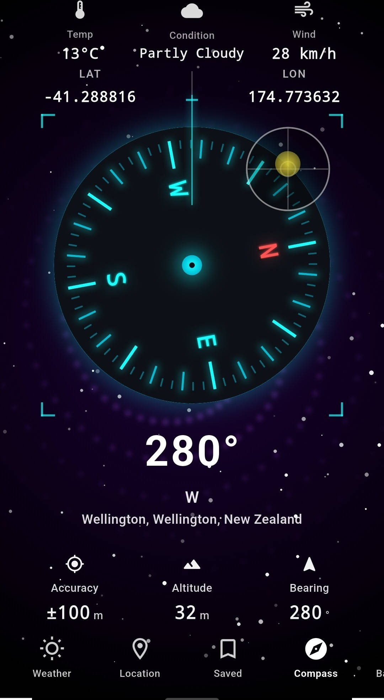
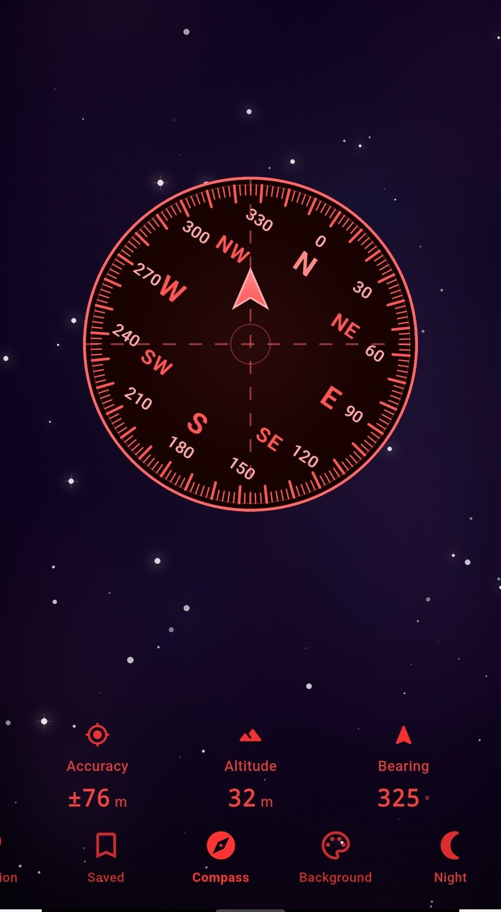
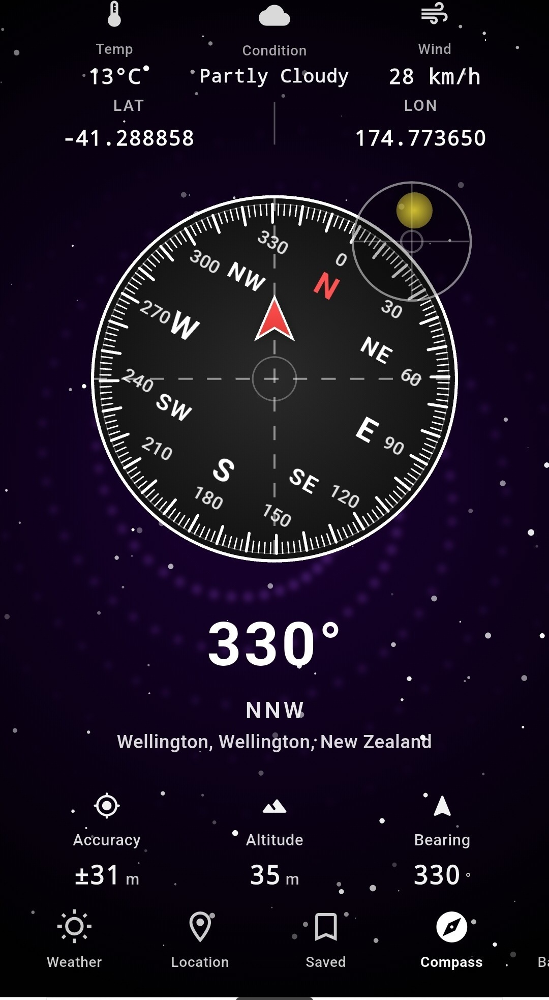
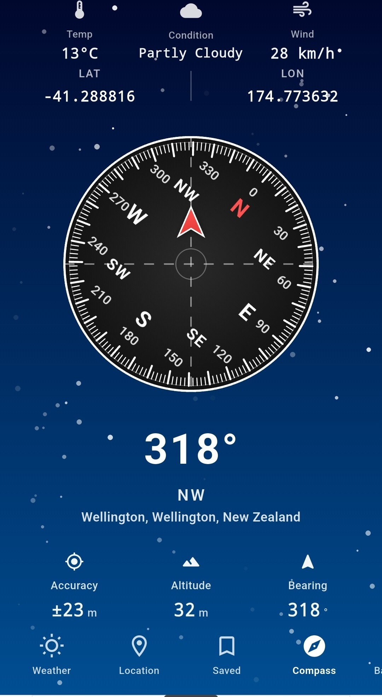
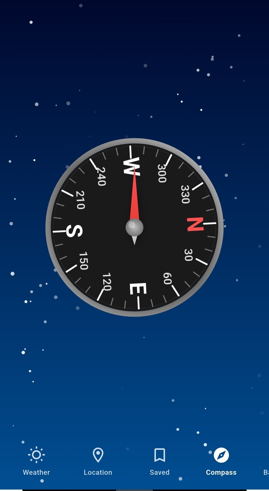
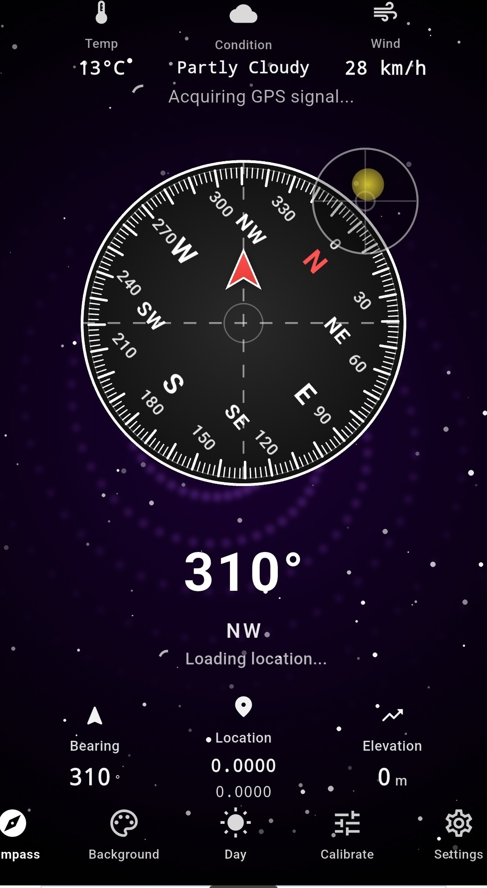
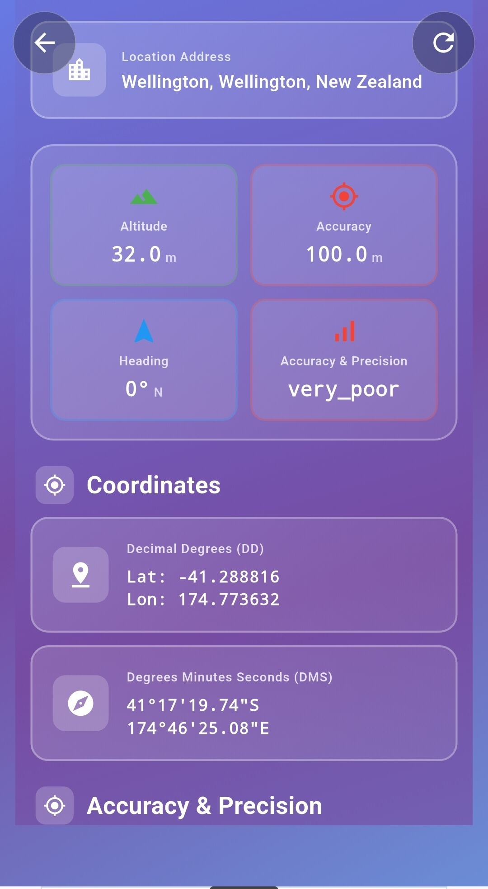
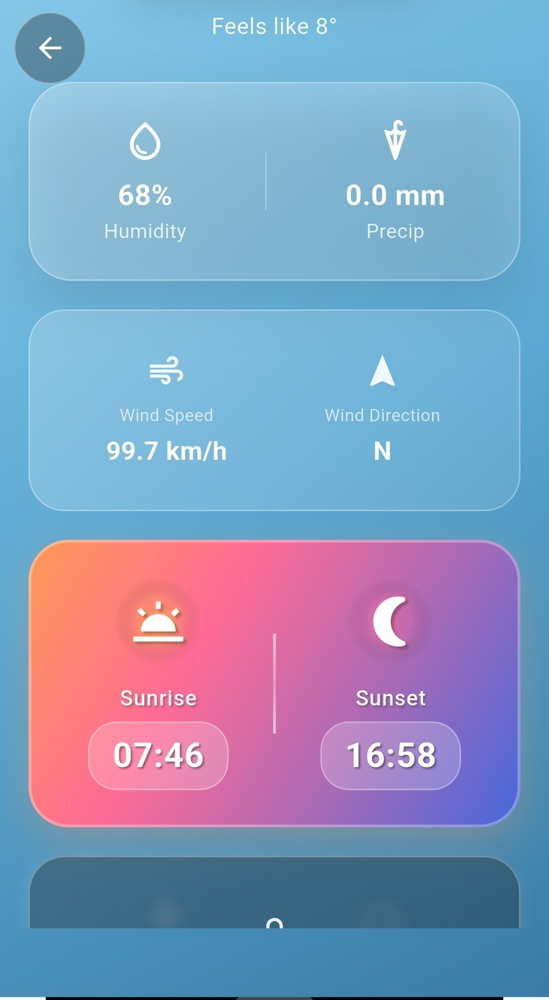
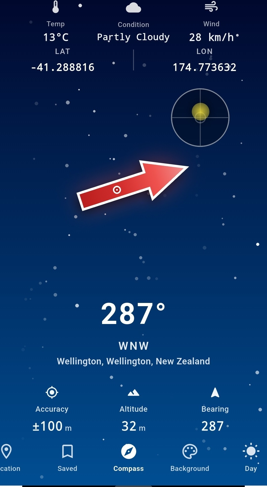
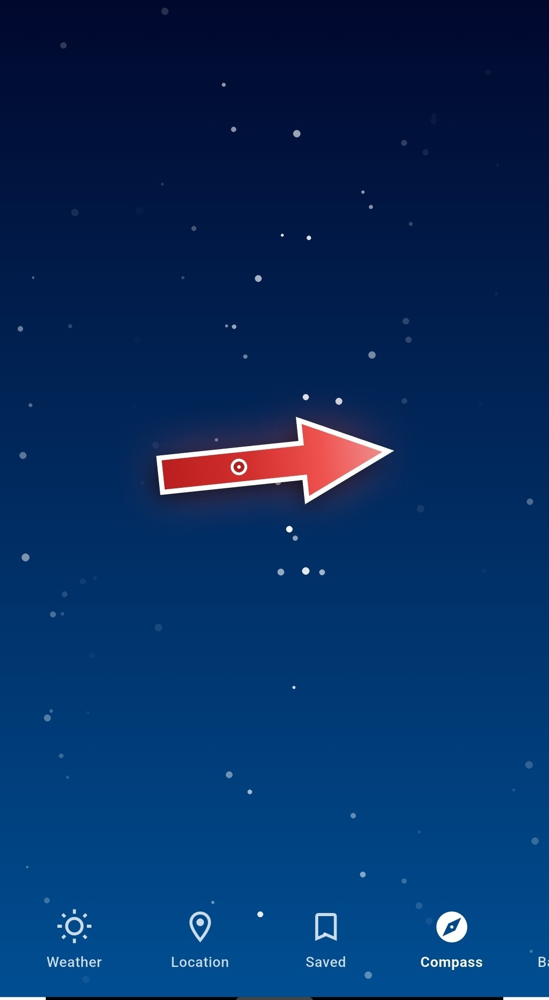

Find true north. Every time. Live bearing · GPS coordinates · weather, fused into one instrument.
Compass Pro turns your phone into a precision navigation instrument — a magnetometer-driven dial, real-time GPS coordinates, altitude, and a full weather readout, wrapped in a panel you can re-skin to match the mission. No clutter, no guesswork, just a needle that knows where it's pointing.
FREE DOWNLOAD · WORKS OFFLINE · NO ACCOUNT REQUIRED
Why precision navigation matters
Phone GPS apps drop the moment signal does. A true magnetometer compass keeps working underground, off-grid, and with airplane mode on.
Bearing, altitude, and coordinates in one glance means less time squinting at three different apps and more time actually moving.
An uncalibrated compass is a dangerous compass. Compass Pro walks you through a proper figure-8 calibration so your heading is one you can trust.
Your compass, your panel.
Compass Pro isn't locked to one look. Swap the dial face, change the backdrop, and decide exactly which readouts earn a place on your screen. Two people running the same app side by side can look completely different — because the instrument should match the mission, not the other way round.
- Dial themes — classic analog, tactical red, deep-space teal, and more. Switch in one tap from the Background menu.
- Live backgrounds — starfield, gradient skies, and solid panels, so the dial reads clearly day or night.
- Configurable stat rows — show or hide accuracy, altitude, and bearing readouts beneath the dial to keep the face as busy or as clean as you want.
- Day & Night modes — a dedicated toggle dims the panel for night navigation without killing your eyes' adjustment.


Six dial faces. One precise needle underneath.
Every theme runs on the same calibrated sensor data — only the face changes. Hold any card to preview it full screen in the app.




Bearing. Accuracy. Altitude. All live.
Beneath the dial, Compass Pro surfaces the numbers that turn a pretty needle into an actual instrument: live accuracy in metres, altitude above sea level, and your exact bearing in degrees and compass-point notation. Tap into the full Location screen for decimal-degree and degrees-minutes-seconds coordinates side by side.


Know the sky before you head into it.
Every dial theme carries a live weather strip — temperature, condition, and wind speed — right above the compass face. Tap through for the full picture: humidity, precipitation, wind direction, and sunrise/sunset times, pulled for your exact GPS position.
On-dial weather strip
Temperature, condition and wind speed sit above every compass theme, no extra tap required.
Sunrise & sunset
Plan your last hour of light or your first hour of dawn without leaving the app.
Wind speed & direction
Full wind detail for sailing, flying, or just deciding which jacket to bring.
Bookmark a bearing. Find your way back.
Save any position straight from the compass or location screen — a trailhead, a campsite, a parking spot in an unfamiliar city. Every saved place keeps its own coordinates, altitude and the bearing you were holding when you marked it, so you can navigate back to the exact spot, not just the general area.
Open the Saved tab any time to browse your location history, jump straight to a previous fix, or refresh it against your current position.


See calibration, the full feature list, and FAQ
The guided calibration walkthrough, the complete feature set, every supported use case, and answers to common questions are just ahead.
Continue to Features & FAQ →